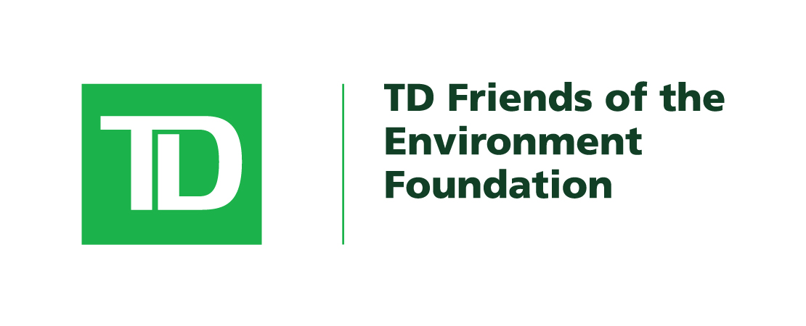
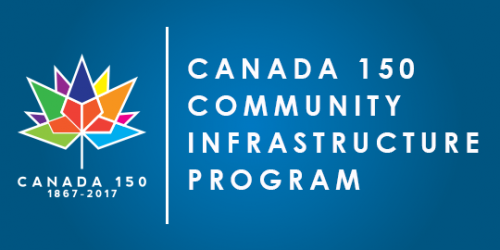
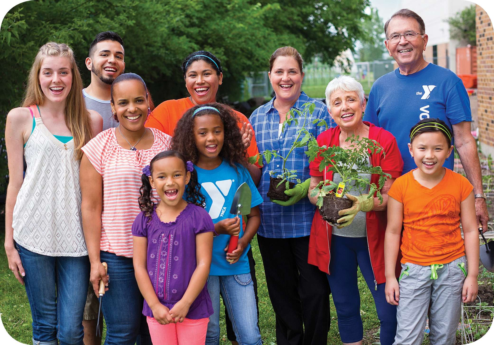

How we got our funding?
The funding for our parks and recreational spaces, will come from a program that is funded by TD Bank called, TD Park Builder’s. What this program does is it funds organizations between $500- $5000 depending on how big the projects are.
Another plus to this program is that it requires groups to target low-income neighborhoods which aligns with our organizations interests.
Another form of funding that we will receive is through a government program called the Canada 150 Community Infrastructure Program. This program supports improving the infrastructure of communities through recreational facilities like arenas, gyms, pool and etc.
Since our organization is targeting low-income based families and individuals, we will be sponsored by local grocery stores and supermarkets to hold cooking classes in order to improve the overall health of the individuals and their families; and to teach them the importance of a healthy diet.
The final method of funding for our company is through Kickstarter. Kickstarter is an online website that allows for groups or individuals to propose their ideas and be funded through individuals from around the world with intentions that the projects do succeed.



Another plus to this program is that it requires groups to target low-income neighborhoods which aligns with our organizations interests.
Another form of funding that we will receive is through a government program called the Canada 150 Community Infrastructure Program. This program supports improving the infrastructure of communities through recreational facilities like arenas, gyms, pool and etc.
Since our organization is targeting low-income based families and individuals, we will be sponsored by local grocery stores and supermarkets to hold cooking classes in order to improve the overall health of the individuals and their families; and to teach them the importance of a healthy diet.
The final method of funding for our company is through Kickstarter. Kickstarter is an online website that allows for groups or individuals to propose their ideas and be funded through individuals from around the world with intentions that the projects do succeed.